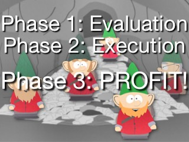

apply plugin: 'java'
repositories {
jcenter()
}
dependencies {
testCompile "junit:junit:4.12"
}Gradle Tour
A tour of Gradle as of April 2017
Overview
Intro
Groovy DSL
Taking Full Control
Evaluation vs Execution
Software Engineering
Working With Dependencies
Misc
Q & A
Sample build.gradle
Follow the standard source directory conventions (e.g., src/main/java, src/main/resources, src/test/groovy, etc.)
Conventions != Bondage
Virtually everything has “reasonable defaults”, but that’s all they are
Giving in to the dictates of your build tool isn’t necessarily a bad thing. If you’re in that kind of a trusting relationship, then it may be right for you.
The moment the convention doesn’t make things easier for you, you have AS MUCH control as you want
What Does That Give You?
$ gw tasks
:tasks
------------------------------------------------------------
All tasks runnable from root project
------------------------------------------------------------
Build tasks
-----------
assemble - Assembles the outputs of this project.
build - Assembles and tests this project.
buildDependents - Assembles and tests this project and all projects that depend on it.
buildNeeded - Assembles and tests this project and all projects it depends on.
classes - Assembles main classes.
clean - Deletes the build directory.
jar - Assembles a jar archive containing the main classes.
testClasses - Assembles test classes.
Build Setup tasks
-----------------
init - Initializes a new Gradle build. [incubating]
wrapper - Generates Gradle wrapper files. [incubating]
Documentation tasks
-------------------
javadoc - Generates Javadoc API documentation for the main source code.
Help tasks
----------
buildEnvironment - Displays all buildscript dependencies declared in root project.
components - Displays the components produced by root project. [incubating]
dependencies - Displays all dependencies declared in root project.
dependencyInsight - Displays the insight into a specific dependency in root project.
dependentComponents - Displays the dependent components of components in root project. [incubating]
help - Displays a help message.
model - Displays the configuration model of root project. [incubating]
projects - Displays the sub-projects of root project.
properties - Displays the properties of root project.
tasks - Displays the tasks runnable from root project.
Verification tasks
------------------
check - Runs all checks.
test - Runs the unit tests.
Rules
-----
Pattern: clean<TaskName>: Cleans the output files of a task.
Pattern: build<ConfigurationName>: Assembles the artifacts of a configuration.
Pattern: upload<ConfigurationName>: Assembles and uploads the artifacts belonging to a configuration.
To see all tasks and more detail, run gradlew tasks --all
To see more detail about a task, run gradlew help --task <task>
BUILD SUCCESSFUL
Total time: 0.866 secsGroovy “Internal DSL”
“build.gradle” is just a Groovy script bound to an instance of
org.gradle.api.Project for a nice build DSL
Everything you can do in Groovy (if, for, calling external services, etc.) are all right there to be used
“ant” is a native part of Groovy, so you get extremely tight Ant integration “for free”
Example of Using Groovy with the DSL
Instead of
dependencies {
compile "org.springframework:spring-web:4.1.6.RELEASE"
compile "org.springframework:spring-context:4.1.6.RELEASE"
compile "org.springframework:spring-test:4.1.6.RELEASE"
}you can go D.R.Y.
dependencies {
["spring-web", "spring-context", "spring-test"].each {
compile "org.springframework:${it}:4.1.6.RELEASE"
}
}Groovy
There’s a good section in the Gradle docs about Groovy you should know
For the most part, it’s essentially Java made simpler
Optional semicolons, optional method parenthesis, simple list/map creation, closures, etc.
Groovy Does Lots of Wonderful Magic
Closures
Closures are similar to Java 8’s lambdas, but MUCH more powerful
The most important difference for now is the availability of “delegate”
If you know Javascript, it’s essentially the same idea as rebinding “this” |

Simple Closure Scope Example
class TheDelegate {
String delegateField = "delegateField"
String delegateMethod() { "delegateMethod" }
}
class A {
String classField = "classField"
String aMethod() { "aMethod" }
static void main(String[] argv) {
String methodVariable = "methodVariable"
Closure closure = {
println classField
println methodVariable
println aMethod()
println delegateField
println delegateMethod()
}
closure.delegate = new TheDelegate()
closure.call()
}
}“Resolved” build.gradle
apply plugin: 'java'
repositories {
jcenter()
}
dependencies {
testCompile "junit:junit:4.12"
}Is effectively this (pseudo-)Java
project.apply(Collections.singletonMap("plugin", "java"));
project.repositories(new Closure(project.getRepositories()) {
public void call() {
((RepositoryHandler)delegate).jcenter();
}
});
project.dependencies(new Closure(project.getDependencies()) {
public void call() {
// "testCompile" isn't a method on DependencyHandler, so its
// "methodMissing(..)" is called, translating the call to be
// a call to "add(..)" instead
((DependencyHandler)delegate).add("testCompile", "junit:junit:4.12");
}
});Example of Complex Task
task serve {
description = "Serve the presentation on localhost:5050"
doLast {
new GroovyShell(this.class.classLoader).evaluate '''import static ratpack.groovy.Groovy.ratpack
ratpack {
serverConfig {
port 5050
development = true
baseDir new File('build').absoluteFile.toPath()
}
handlers {
files { dir 'asciidoc/revealjs' indexFiles 'index.html' }
}
}
'''
}
}Gradle Wrapper
A shell/batch script that handles bootstrapping your build environment
Why Is That A Good Thing?
Trying to build your project requires just the JDK
There are no other pre-reqs
Multiple versions of the build tool are handled transparently
There’s no need to have multiple versions installed or tweeking jobs/environment variables on CI machines
You can upgrade or lock-down the build tool version for a specific project
One benefit is it allows the Gradle team to be very aggressive in adding new features and deprecating old functionality
PRO TIP: Always use the wrapper
Gradle Wrapper Search Script
#!/bin/bash
# PURPOSE
#
# The Gradle wrapper[1] is a simple and convenient way of making Gradle
# builds self-contained and reproducible. However, in multi-project
# builds, it can be cumbersome to type in relative paths e.g.:
# ./gradlew # when in root
# ../gradlew # when in subdir
#
# This script finds any Gradle wrapper (gradlew) executable in the
# current directory or any directory above it.
#
# DEBUGGING
#
# To observe the search for gradlew and to ensure which one is
# ultimately used, invoke the script with Bash's "-x" option. Below you
# can see the directory traversal at work, finally selecting the
# 'gradlew' script one directory up from where 'gradle' was invoked.
#
# $ cd /src/my-proj/submod
# $ bash -x $(which gw) --version
# + GRADLEW=/src/my-proj/submod/gradlew
# + GRADLEW=/src/my-proj/gradlew
# + /src/my-proj/gradlew --version
# ...
#
#
# [1] http://gradle.org/docs/current/userguide/gradle_wrapper.html
CWD=$PWD
until [ $CWD == / ]; do
GRADLEW=$CWD/gradlew
if [ -e $GRADLEW ]; then
exec $GRADLEW $@
fi
CWD=$(dirname $CWD)
done
echo No Gradle wrapper found
exit 1What About When You Need TOTAL Control?
Control the build tool, library versions, etc. not enough?
Want to control the OS, the JDK, etc.?
Using Docker and Gradle from TravisCI
# Using Docker because there's a bug in the default (ancient) environment Travis uses for Java
services:
- docker
before_install:
- docker pull openjdk:8u121-jdk
script:
- docker run -v $HOME/.gradle:/.gradle -v $PWD:/src -w /src openjdk:8u121-jdk ./gradlew -i --no-daemon clean check -g /.gradle
#
# Caching per https://docs.travis-ci.com/user/languages/java/
#
before_cache:
- rm -f $HOME/.gradle/caches/2.14.1/plugin-resolution/cache.properties.lock
cache:
directories:
- $HOME/.gradle/caches/
- $HOME/.gradle/wrapper/Still Need MORE Control?
There are several powerful Docker plugins
Two of the most popular are
They allow you to dynamically create images (with or without an intermediate Dockerfile), run images,
push to repositories, etc.
For example, you can have a Node, Phantom, Firefox, etc. installed in a Docker image that mounts your Java project that runs as part of your integration/functional tests, small and fast enough to run regularly on your workstation…
Docker “Too Much”?
You can still easily integrate/control other toolchains
Need something from Node?

The Gradle Node Plugin will let you run Node/Grunt/Gulp commands “as if” they were Gradle tasks
Node need not have been previously installed
Everything’s sandboxed, so you can control the specific versions involved
Need something from Ruby?
The Gradle JRuby Plugin lets you use JRuby to use Ruby “natively”, including full Gem support
The Phases

First: Evaluation
Assemble the build model (identify the tasks, configuration, what the task execution graph looks like, etc.)
I’m including build initialization here for simplicity
Second: Execution
Using the graph built during the Evaluation phase, execute the task actions
Eval vs Exec Example
task fooble {
doLast {
logger.lifecycle "Running fooble last action"
}
doFirst {
logger.lifecycle "Running fooble first action"
}
logger.lifecycle "Configuring fooble"
}
logger.lifecycle "Evaluating project"$ gw fooble
Configuring fooble
Evaluating project
:fooble
Running fooble first action
Running fooble last action
BUILD SUCCESSFULEval Ordering
“
init.gradle”bootstrap overall environment
“
settings.gradle”identify the
Projectinstances that need to be created and how to associate with abuild.gradle
“
build.gradle”'s “plugins” and “pluginRepositories” blocksimmutable declaration of plugins for the Project
“
build.gradle”'s “buildscript” blockolder and more flexible way to set up the Project’s classpath (e.g., load libraries and plugins)
the rest of “
build.gradle”
Deprecated Left Shift
In older example you will see task declarations like
task something() << {
// task action
}But it would confuse people since it wasn’t clear how it’s different from
task something {
// configure the task
}So now the the preferred way is the explicit
task something {
doLast {
// do something
}
}
// or
task somethingElse()
somethingElse.doLast {
// do something
}Thinking Like A Software Engineer
Just because it’s a “build” doesn’t mean standard cleanliness rules for software engineering don’t apply…
“SourceSets”
These are a poorly understood but awesome feature
Though provided by the Java Plugin (with great docs), it certainly isn’t limited to Java
They allow for cleanly separating different kinds of source files, like integration tests, acceptance tests, WSDL, different languages (e.g., Groovy, Clojure, Scala), etc.
“Configuration”
a dynamic sets of artifacts.
Each SourceSet automatically has “*Compile”, “*CompileOnly”, and “*Runtime” Configurations created
(They are analogous to Maven’s “compile”, “provided”, and “runtime” scopes, respectively.)
A default application of the “java” plugin has two SourceSets: “main” and “test”.
The “main” SourceSet is “implied” for the automatic configurations. Therefore the “Configuration”
instances are “compile”, “compileOnly”, “runtime”, “testCompile”, “testCompileOnly”,
and “testRuntime”.)
Far more than merely “scope”
They are a fully programmable model, as we’ll see
Can be used for more than just JARs
For example, one of the Docker plugins uses a “
docker” configuration as a simple way to build the “docker-compose.yml” file
Injection
Projects can interact to inject behavior
Injection Example
subprojects {
if (name.contains("-impl") {
sourceSets {
intTest
}
dependencies {
intTestCompile "junit:junit:4.12"
}
task intTest(type: Test) {
testClassesDir = sourceSets.intTest.output.classesDir
classpath = sourceSets.intTest.runtimeClasspath
}
}
}As pseudo-Java
project.getSubprojects().each(subproject -> {
if (subproject.getName().contains("-impl") {
subproject.sourceSets(new Closure(subproject.getSourceSets()) {
public void call() {
((SourceSetContainer)delegate).add("intTest");
}
});
subproject.dependencies(new Closure(subproject.getDependencies()) {
public void call() {
((DependencyHandler)delegate).add("intTestCompile", "junit:junit:4.12");
}
});
subproject.task(Collections.singletonMap("type", Test.class), "intTest", new Closure() {
// the "delegate" is set on the closure after the factory method creates the Task instance
public void call() {
((Test)delegate).setTestClassesDir(
subproject.getSourceSets().getByName("intTest").getOutput().getClassesDir());
((Test)delegate).setClasspath(
subproject.getSourceSets().getByName("intTest").getRuntimeClasspath());
}
});
}
});Modularizing Your Logic
For a non-trivial project, there’s often a LOT going on:
compilation
unit/integration/functional tests
code generation
documentation generation
signing artifacts
static code analysis
annotation processors (e.g., Lombok, Checker Framework)
deployment information
etc.
Just like everything else in your codebase, your build should be simple and modular
One of the simplest ways is to extract into fragments
build.gradle
apply from: "gradle/compile.gradle"
apply from: "gradle/testing.gradle"
apply from: "gradle/documentation.gradle"
// ...gradle/compile.gradle
apply plugin: "java"
repositories {
jcenter()
}
dependencies {
compile 'io.javaslang:javaslang:2.0.5'
}
// ...Of course more sophisticated and common needs should be extracted into custom Tasks and Plugins for reuse
Plugin Registry
There’s currently over 1,400 plugins at https://plugins.gradle.org/
Composite Builds
Beyond multi-module, sometime you have dependencies on independent projects with their own repos and lifecycles…
In the “olden days” that meant a workflow like
change dependency to use -SNAPSHOT
change to other project and make modifications
change version to -SNAPSHOT
build and publish to a local repo
change back to main project
recompile and retest
rinse and repeat 4-6 as necessary
build and deploy a new version to the binary repository of the other project
update main project to use the new version of the other project
New Multi-Projects
change to other project and make modifications
from main project:
gw test --include-build=../other-proj
repeat 1-2 as necessary
build and deploy a new version to the binary repository of the other project
update main project to use the new version of the other project
Many More Ways to Modularize
Dependencies
Keeping Things Clean
Dependencies Report
$ gw dep
:dependencies
------------------------------------------------------------
Root project
------------------------------------------------------------
archives - Configuration for archive artifacts.
No dependencies
compile - Dependencies for source set 'main'.
+--- org.springframework.boot:spring-boot-starter: -> 1.4.2.RELEASE
| +--- org.springframework.boot:spring-boot:1.4.2.RELEASE
| | +--- org.springframework:spring-core:4.3.4.RELEASE
| | \--- org.springframework:spring-context:4.3.4.RELEASE
| | +--- org.springframework:spring-aop:4.3.4.RELEASE
| | | +--- org.springframework:spring-beans:4.3.4.RELEASE
| | | | \--- org.springframework:spring-core:4.3.4.RELEASE
| | | \--- org.springframework:spring-core:4.3.4.RELEASE
| | +--- org.springframework:spring-beans:4.3.4.RELEASE (*)
| | +--- org.springframework:spring-core:4.3.4.RELEASE
| | \--- org.springframework:spring-expression:4.3.4.RELEASE
| | \--- org.springframework:spring-core:4.3.4.RELEASE
| +--- org.springframework.boot:spring-boot-autoconfigure:1.4.2.RELEASE
| | \--- org.springframework.boot:spring-boot:1.4.2.RELEASE (*)
| +--- org.springframework.boot:spring-boot-starter-logging:1.4.2.RELEASE
| | +--- ch.qos.logback:logback-classic:1.1.7
| | | +--- ch.qos.logback:logback-core:1.1.7
| | | \--- org.slf4j:slf4j-api:1.7.20 -> 1.7.21
| | +--- org.slf4j:jcl-over-slf4j:1.7.21
| | | \--- org.slf4j:slf4j-api:1.7.21
| | +--- org.slf4j:jul-to-slf4j:1.7.21
| | | \--- org.slf4j:slf4j-api:1.7.21
| | \--- org.slf4j:log4j-over-slf4j:1.7.21
| | \--- org.slf4j:slf4j-api:1.7.21
| +--- org.springframework:spring-core:4.3.4.RELEASE
| \--- org.yaml:snakeyaml:1.17 -> 1.15
.........That report doesn’t show the plugin dependencies.
For that, use:
$ gw buildEnvironmentDependency Insight
To make it much easier to identify exactly what is bringing in a particular dependency, use “dependencyInsight”
$ gw dI --dependency yaml
:dependencyInsight
org.yaml:snakeyaml:1.15 (selected by rule)
\--- compile
org.yaml:snakeyaml:1.17 -> 1.15
\--- org.springframework.boot:spring-boot-starter:1.4.2.RELEASE
+--- compile
+--- org.springframework.boot:spring-boot-starter-data-mongodb:1.4.2.RELEASE
| \--- compile
\--- org.springframework.boot:spring-boot-starter-actuator:1.4.2.RELEASE
\--- compile
(*) - dependencies omitted (listed previously)
BUILD SUCCESSFULWorking With the Dependency Model
configurations.all {
resolutionStrategy.eachDependency { DependencyResolveDetails details ->
if (details.requested.name == 'groovy-all') {
//prefer 'groovy' over 'groovy-all':
details.useTarget group: details.requested.group, name: 'groovy', version: details.requested.version
}
if (details.requested.name == 'log4j') {
//prefer 'log4j-over-slf4j' over 'log4j', with fixed version:
details.useTarget "org.slf4j:log4j-over-slf4j:1.7.10"
}
}
}
dependencies {
modules {
module("com.google.collections:google-collections") {
replacedBy("com.google.guava:guava")
}
}
}Powerful Version Specifications
All of Apache Ivy's capabilities and more are available to you
Dynamic Versions
You can specify dynamic versions (e.g., "12.3.+", "latest.release", "[2.3, 3.0]", etc.)
latest.integration will resolve the latest -SNAPSHOT version
Don’t do it
Unless you’re purposely writing a randomness generator, non-determinism is not a desired trait


“What?!? I didn’t change anything. Why are the tests failing when it worked five minutes ago? [hours later] Oh, now it’s bringing in a new version of that library…”
Plugins Block
plugins {
id 'groovy'
id 'com.jfrog.bintray' version '1.7.1'
}Not specifying a version means effectively “latest.release”
One restriction is you can’t use a variable for the version like
buildscript {
repositories {
jcenter()
}
ext.kotlin_version = '1.1.0'
dependencies {
classpath "org.jetbrains.kotlin:kotlin-gradle-plugin:$kotlin_version"
}
}
apply plugin: "kotlin"
// ....
dependencies {
compile "org.jetbrains.kotlin:kotlin-stdlib:$kotlin_version"
compile "org.jetbrains.kotlin:kotlin-reflect:$kotlin_version"
}Misc
Daemon
Benefits
Startup Speed
Leaves the process running, so memory already allocated, filesystem has been read, etc.
Caches information like hashes of inputs/outputs, compiled build scripts, etc.
Execution Speed
HotSpot sure likes long-lived processes…
Perfect for development environments (including IDE tooling), but pretty useless for CI environments
Plugins Note for the Daemon
When writing a plugin or the like, be careful with the use of “static” since the daemon retains
classloaders as part of the caching
Kotlin
xxxxxxxxxxxxxxxxxxx
Incremental Mode
XXXXXXXXXXXXXXXXXXX
Java-Lib Plugin
XXXXXXXXXXXXXXXXXXX
Q & A
Images
handcuff base image: http://www.clipartbest.com/clipart-9ipeAkaAT
golden ticket: https://sleeplessinsandy.blogspot.com/2011/01/very-wonka-birthday.html
daemon (FreeBSD) icon: http://www.goksinakdeniz.net/2012_11_18_archive.html
spray bottle base: http://www.clipartkid.com/cleaning-supplies-clipart-cleaning-supplies-clipart-jGLBls-clipart/
Docker logo: https://www.docker.com/brand-guidelines
Underpants Gnomes: http://southpark.wikia.com/wiki/Underpants_Gnomes
Puppet Master: https://en.wikipedia.org/wiki/File:Puppet_Master_comic.jpg
Engineer Brain: https://acmutep.wordpress.com/2011/03/23/career-focus-software-engineer/
Not Ready - Derpibooru.org
{kind=link}
{kind=link}